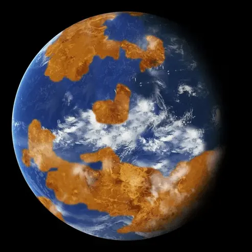

В небе сияет так много звезд, так много красивых вещей подмигивают вам, но когда выходит Венера, всё остальное тускнеет и уходит на задний план.
Долгие годы взор человечества был устремлён к звёздам, но те всё ещё остаются для нас недостижимо далёкими. И потому в эпоху первых робких космических полётов мы присматриваемся к нашим ближайшим соседям — Венере и Марсу.
Венеру можно увидеть невооруженным взглядом в утренние и вечерние часы в виде самой яркой звезды небосклона. Именно поэтому её часто называют Вечерней или Утренней звездой.
А что мы знаем о Венере?
Венера названа в честь богини любви и красоты из римского пантеона из-за того, что она сияла ярче остальных четырех планет, известных на то время древним астрономам.
Один день на Венере равен 243 земным суткам, а год — 224,7! То есть венерианский год короче суток.
Венера вращается в обратном направлении по сравнению с другими планетами. Это означает, что Солнце на планете встает на западе и заходит на востоке.
Атмосфера Венеры состоит в основном из углекислого газа и азота. Поверхность планеты полностью скрывают чрезвычайно густые облака, состоящие из капель серной кислоты.
На поверхности Венеры давление в 93 раза больше, чем на Земле. Большая часть исследовательских космических кораблей была раздавлена через считанные минуты после посадки на поверхность.
Средняя температура поверхности планеты — около 462 ℃, что делает это место, по мнению учёных, невозможным для обитания (в том числе и инопланетян). Венера — самая горячая планета Солнечной системы.
Венера — это ад. Но так было не всегда...
Новые компьютерные модели позволили предположить, что Венера могла быть пригодной для жизни в течение двух-трёх миллиардов лет, причём возможно, она могла сохранять такие условия и по сей день. Однако предположительно 700 миллионов лет назад атмосфера планеты претерпела радикальную трансформацию, и учёные пытаются понять, что её вызвало.
Сможем ли мы жить на Венере?..
Как это ни странно, но да!
Проблема Венеры в том, что поверхност находится слишком далеко от уровня давления в одну земную атмосферу. Но тем не менее, атмосфера Венеры — это самая похожая на земную среда в Солнечной системе. В 50 километрах над поверхностью, Венера оказывается чрезвычайно дружелюбной. Смущать будет разве что отсутствие кислорода для дыхания.
Выход есть — города в облаках!
Колонии Венеры будут, скорее всего, выглядеть как огромные облачные города. Плавающие конструкции и дирижабли из легкого, но прочного материала позволят этим городам быть мобильными и устойчивыми в активной атмосфере Венеры. Дирижабли могут быть покрыты солнечными панелями, что позволит использовать энергию Солнца.